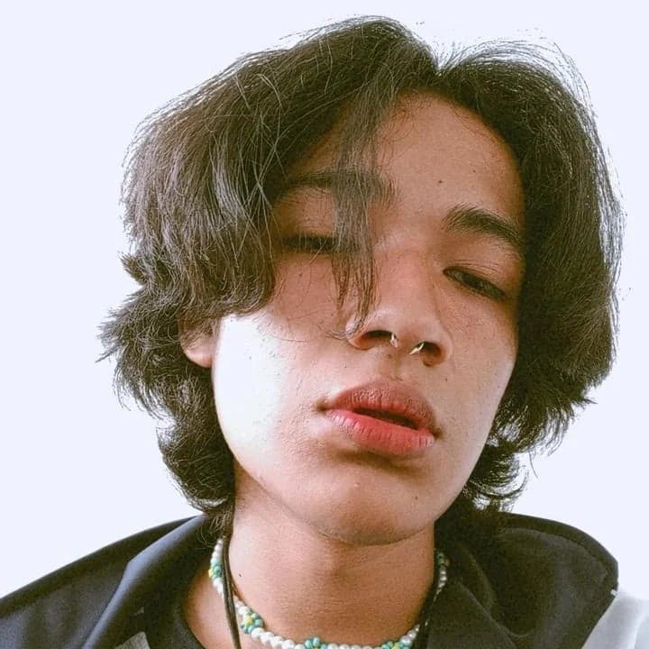
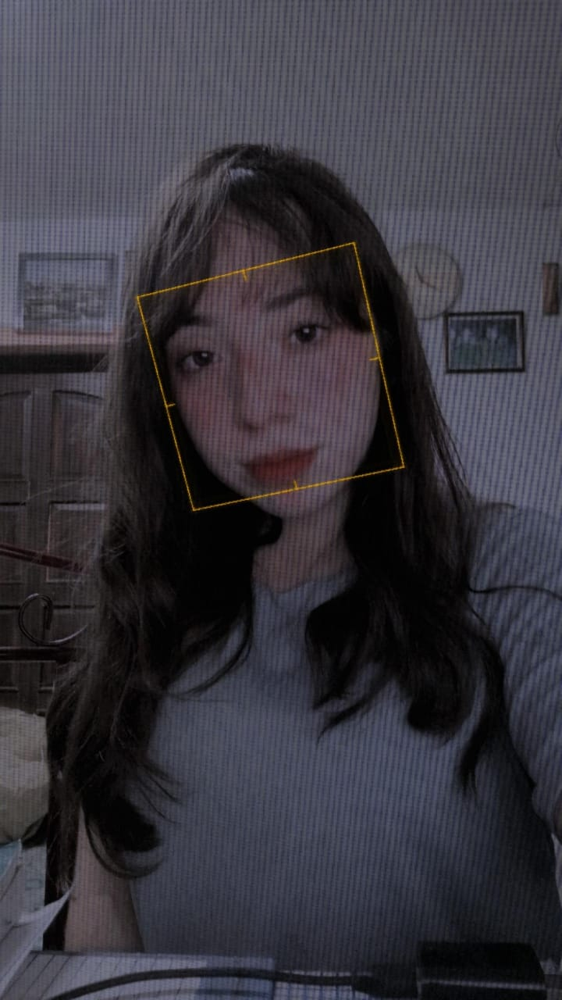
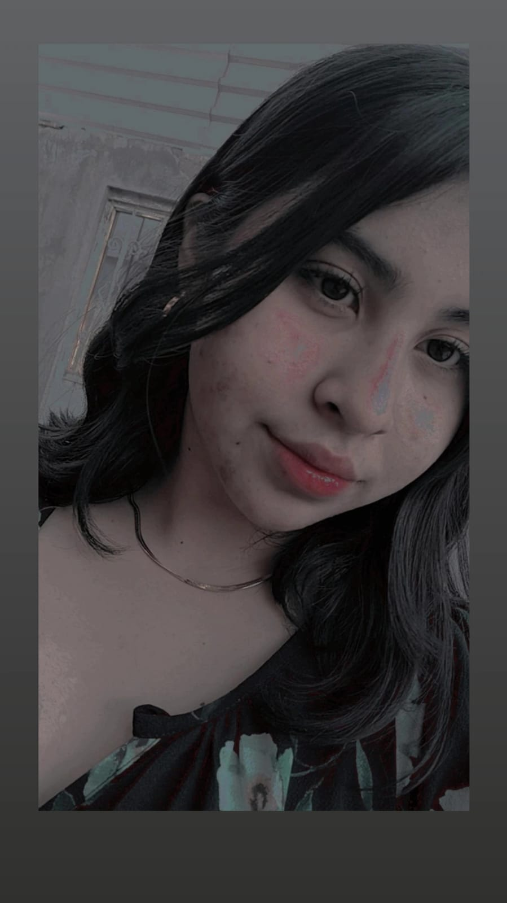

Marco Oswaldo actualmente 17 años desde pequeño su más grande sueño ser un
actor de doblaje y animador profesional. Tiene una gran pasión por el dibujo
y es algo en lo que invierte cierta parte de su tiempo, también disfruta de
jugar videojuegos desde que tiene memoria, disfruta de pasar tiempo con sus
amigos y no duda en brindar apoyo o escucha a cualquiera que lo necesite

Anahi nacio el 13 de Noviembre del 2005 en Guanajuato, actualmente tiene 16 años y cursa 4to semestre
de preparatoria en el CBTis, desde pequeña le gusta mucho la escuela, ella quiere estudiar pedagogia,
desde pequeña ha sido muy responsable, le gusta escuchar musica, sus cantantes favoritos
son Taylor Swift y Billie Eilish, le gusta mucho el ingles. Es muy buena dando consejos
y escuchar a las personas.
Como a todo adolescente le gusta salir a divertirse con sus amigos.

Xochil nació el 4 de mayo del año 2005 en la ciudad de Guanajuato , en el octavo mes de
gestación ,por dificultades en el embarazo, creció en el un rancho localizado sobre
la carretera Irapuato Silao , llamando San José de llanos ,dónde actualmente sigue
viviendo , se concidera de una personalidad positiva aún que en ocasiones todo lo
contrario , de carácter duro como su padre aún que esto le a traigo algunas problemáticas,
chica muy social ,le gusta hacer amigos ,es muy selectiva en ellos .
Algunos planes a futuro que tiene es seguir con una profesional, tener casa propia y comprar
una camioneta a la que es muy amante (Silverado 2018) .En estos momentos cursa el cuarto semestre
en el Cbtis en la especialidad de programación
